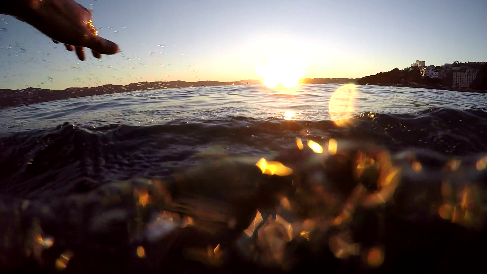

We may not be swimming in the same harbour, but we are still swimming in the same water.Fill in your details below and "join us Michael" ... I mean, join the Lost Buoys ...
Swim back
Thank you for viewing my website. This is only a project for the Zero to Mastery HTML course and by filling in your details, you are not really joining the Lost Buoys. However, if you are not already an ocean swimmer, I highly recommend giving it a try. I am 31 and I was very afraid of swimming while growing up. But 4 years ago, I put myself in the pool and I’ve gradually progressed to where I am today; swimming in the sea, in togs with the help and support of my fellow Lost Buoys. You can become an ocean swimmer too! Just keep swimming
